ScreenshotsCaptures d'écran
Every LibreHU app, screen by screen. Taken automatically from the published APKs on an emulator at the head unit's resolution (1280 × 720, 160 dpi), in French: Android 9 like the head unit, Android 11 for the apps whose native code is ARM only (service, FM, Disc).Chaque appli LibreHU, écran par écran. Prises automatiquement à partir des APK publiés sur un émulateur à la résolution de l'autoradio (1280 × 720, 160 dpi), en français : Android 9 comme l'autoradio, Android 11 pour les applis dont le code natif est ARM seulement (service, FM, Disc).
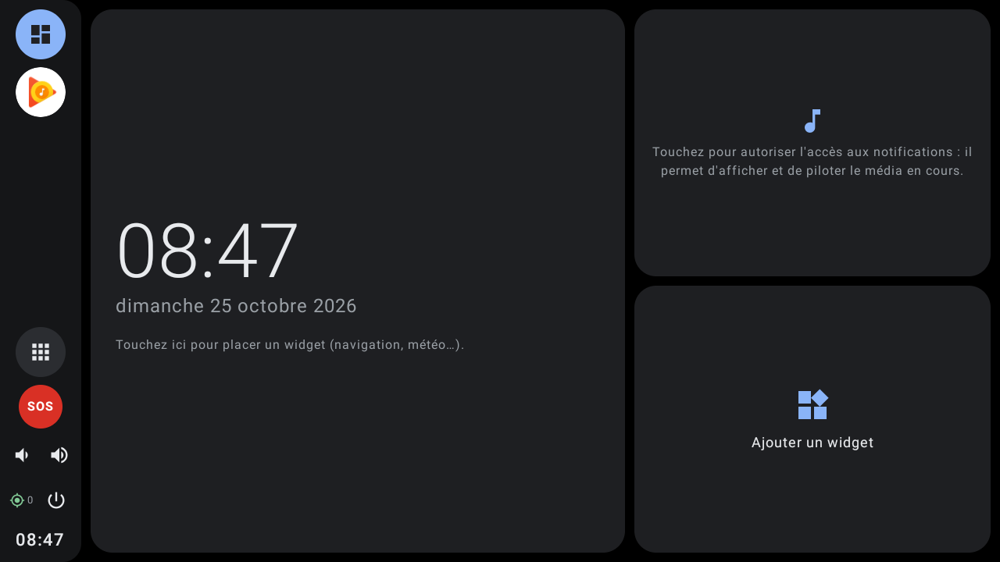
LibreHU LauncherLibreHU Launcher
Dashboard home screen, settings, retro styles, wallpapers, standby clock, lock screen.Écran d'accueil tableau de bord, réglages, styles rétro, fonds, horloge de veille, verrouillage. · 27 screensécrans
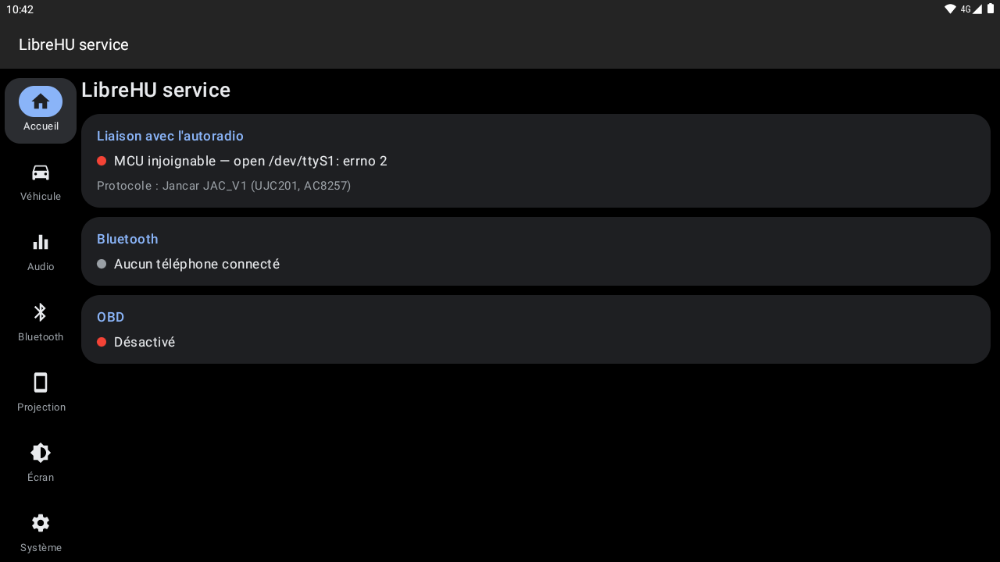
LibreHU serviceLibreHU service
Every section and page of the core service.Chaque rubrique et chaque page du service central. · 56 screensécrans
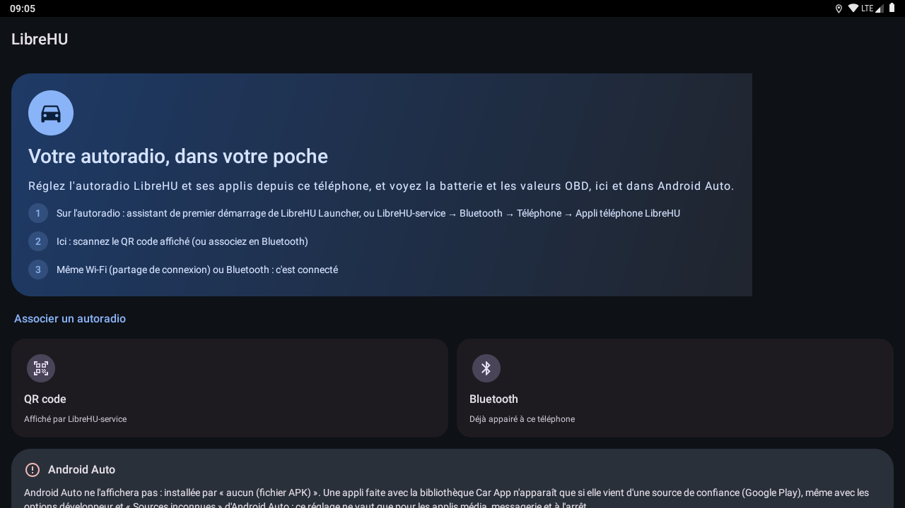
LibreHU Bridge (phone)LibreHU Bridge (téléphone)
The phone app before pairing.L'appli téléphone avant l'association. · 2 screensécrans

LibreHU AppsLibreHU Apps
Installer and updater: apps, versions, zips, downloads, settings.Installation et mises à jour : applis, versions, zips, téléchargements, réglages. · 11 screensécrans
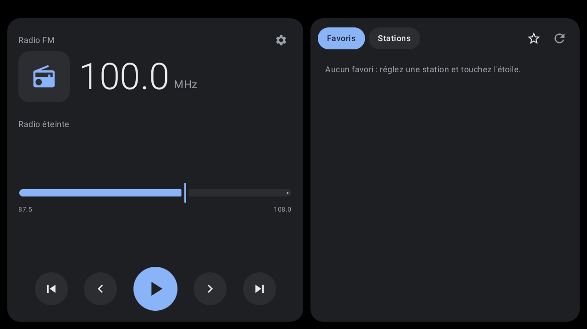
LibreHU FMLibreHU FM
FM radio, stations and settings.Radio FM, stations et réglages. · 5 screensécrans
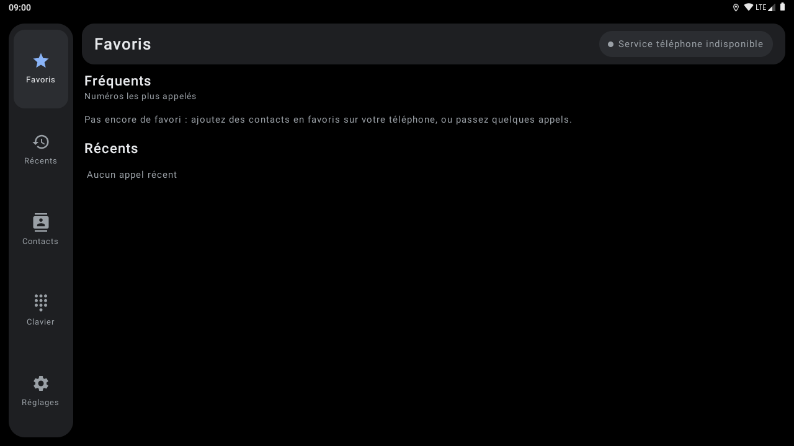
LibreHU DialerLibreHU Dialer
Bluetooth phone: favourites, recents, contacts, keypad, settings.Téléphone Bluetooth : favoris, récents, contacts, clavier, réglages. · 6 screensécrans
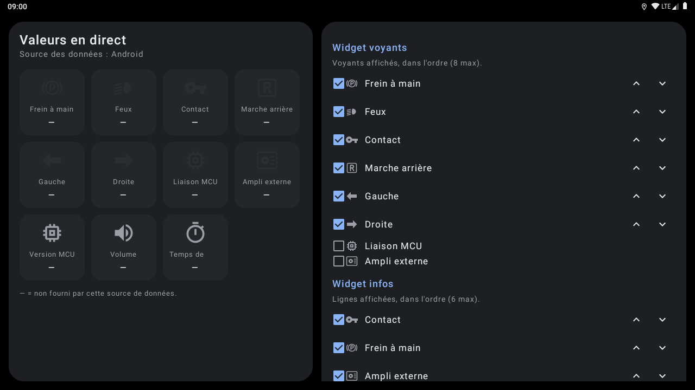
LibreHU WidgetsLibreHU Widgets
Settings of the warning lights and info widgets.Réglages des widgets voyants et infos. · 3 screensécrans
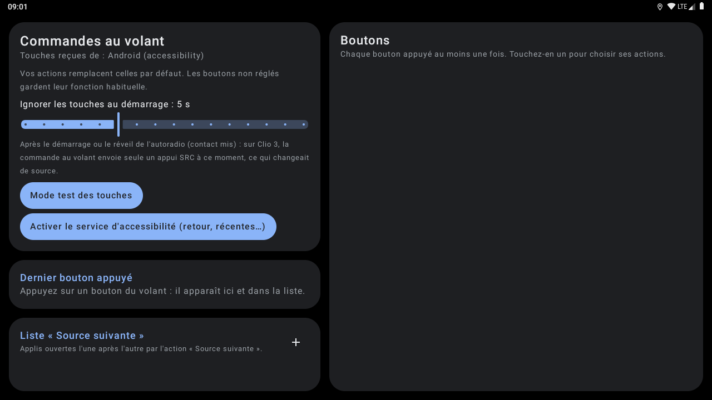
LibreHU BtnRemapLibreHU BtnRemap
Steering wheel buttons and key test mode.Boutons du volant et mode test des touches. · 3 screensécrans
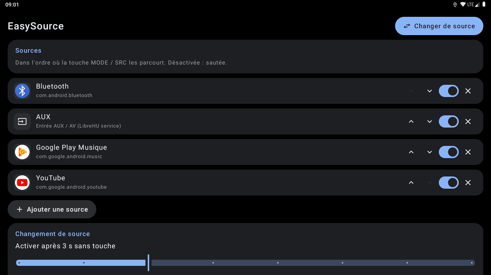
LibreHU EasySourceLibreHU EasySource
Sources and the full screen picker.Sources et sélecteur plein écran. · 2 screensécrans
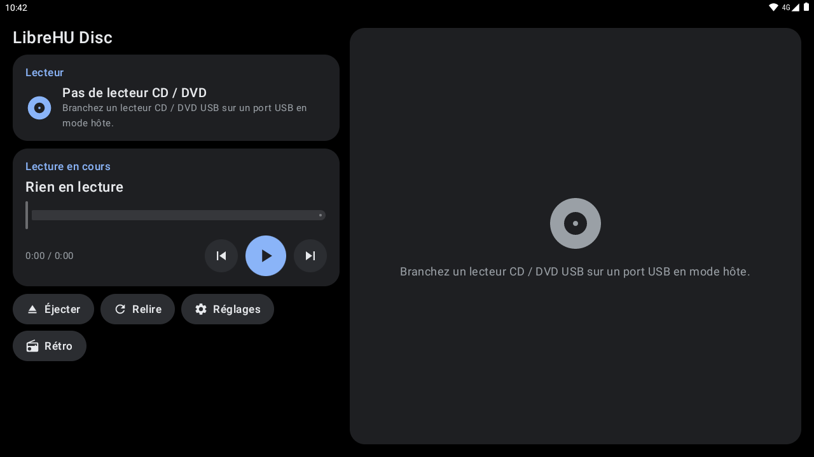
LibreHU DiscLibreHU Disc
CD / DVD player and ripping settings.Lecteur CD / DVD et réglages d'extraction. · 3 screensécrans
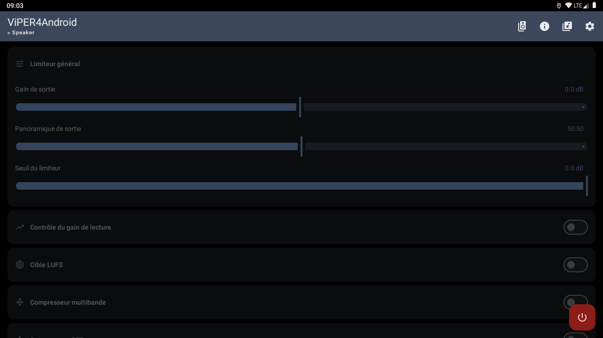
ViPER4Android LibreHUViPER4Android LibreHU
Sound effects.Effets sonores. · 4 screensécrans
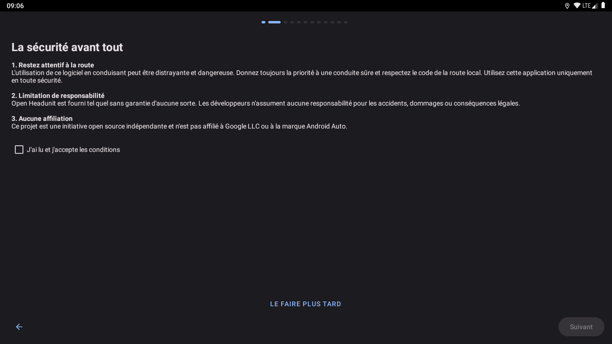
Android Auto (Open Headunit LibreHU)Android Auto (Open Headunit LibreHU)
Android Auto receiver.Récepteur Android Auto. · 3 screensécrans
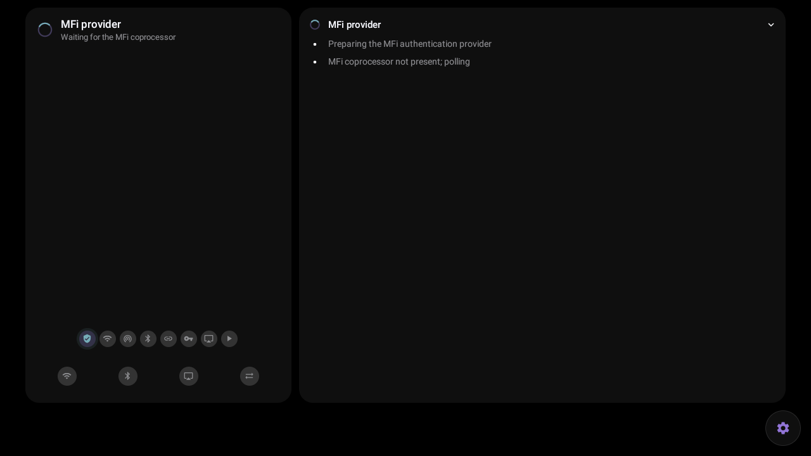
CarPlay (xcertplay LibreHU)CarPlay (xcertplay LibreHU)
CarPlay receiver.Récepteur CarPlay. · 1 screensécrans
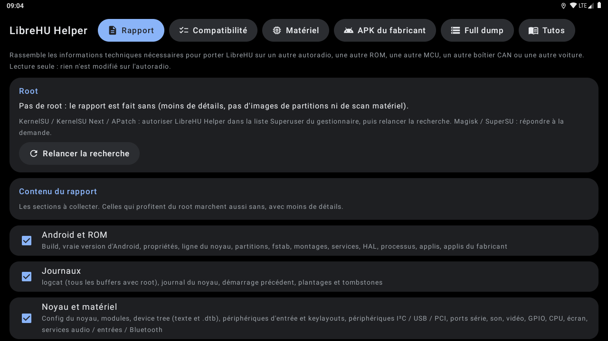
LibreHU HelperLibreHU Helper
Diagnostics for porting.Diagnostic pour le portage. · 10 screensécrans
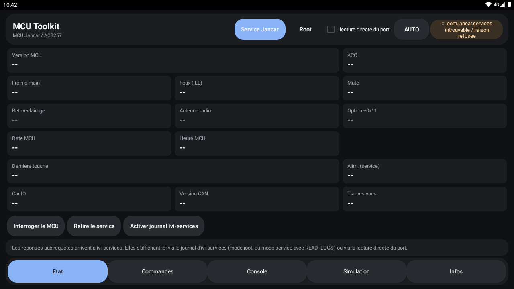
MCU Toolkit (legacy)MCU Toolkit (legacy)
Old MCU diagnostic app.Ancienne appli de diagnostic MCU. · 4 screensécrans
Emulator without the head unit: car, MCU and sensor values are empty. Screenshots are refreshed by the Screenshots workflow of LibreHU-OTA-app.Émulateur sans autoradio : les valeurs de la voiture, de la MCU et des capteurs sont vides. Les captures sont refaites par le workflow Screenshots de LibreHU-OTA-app.